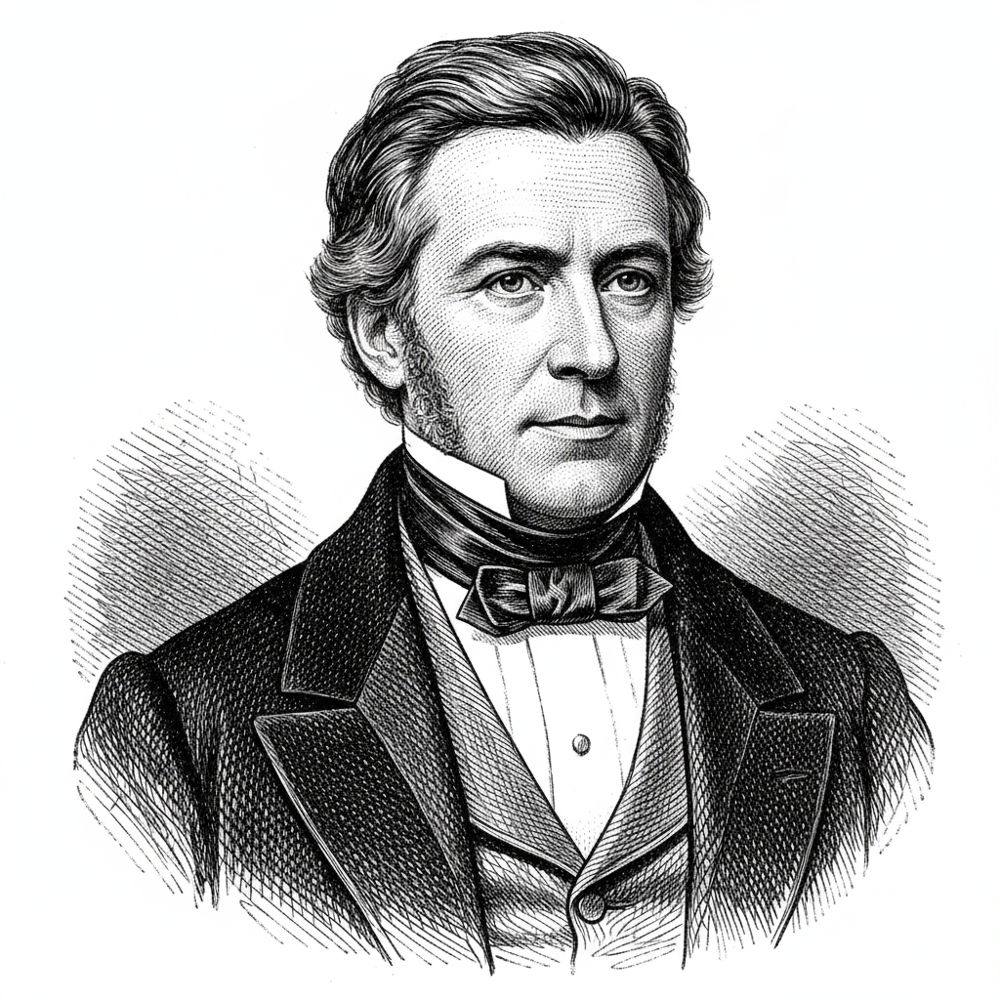

Булева алгебра и логические операции
Что такое Булева Алгебра
Вопрос к аудитории: Как вы принимаете решения в повседневной жизни?
Давайте начнем с логики:
Логика — это наука о правильном рассуждении, и она играет важнейшую роль в нашем повседневном мышлении и, конечно, в программировании. Когда мы пишем программы, мы не просто пишем код; мы создаем систему, которая принимает решения на основе заданных условий.
Представьте, что вы хотите создать программу, которая помогает вам принимать решения:
Пример логического рассуждения - "Если на улице идёт дождь, то я возьму зонт, иначе если нет дождя, пойду гулять в солнечных очках"
Булева алгебра — это раздел математики, названа в честь Джорджа Булла, работает с двумя основными значениями: истина (true) и ложь (false). Мы можем использовать булеву алгебру для построения логических выражений, которые формируют базу программирования.

Логический тип данных
В языке Dart булевый тип данных обозначается как bool
Dart - Булев тип данных


bool isComplete = true;
bool isAdmin = false;
print(isComplete); // Выведет: true
print(isAdmin); // Выведет: false
Логические операции
В булевой алгебре есть три основные логические операции: И, ИЛИ и НЕ.
Математическая аналогия для логики
Чтобы было легче понять, как работают логические операции, давайте представим, что:
true— это число 1 (есть сигнал)false— это число 0 (нет сигнала)
Тогда логические операции можно представить как простые математические действия:
- И (
&&) — это умножение (*). Результат будет 1, только если оба множителя равны 1.true && true=>1 * 1 = 1true && false=>1 * 0 = 0 - ИЛИ (
||) — это сложение (+), но с одним правилом:1 + 1 = 1(в булевой логике). Результат будет 1, если хотя бы одно слагаемое равно 1.true || false=>1 + 0 = 1false || false=>0 + 0 = 0
Эта аналогия поможет вам быстро вычислять результат сложных логических выражений.
Операция И (&&)
Логическое И
Логическое И возвращает истину, только если оба значения истинны.
Обозначение: &&
Это похоже на ситуацию, когда вам нужно, чтобы два события произошли одновременно, чтобы получить желаемый результат.
| A | B | A && B |
|---|---|---|
| 0 | 0 | 0 |
| 0 | 1 | 0 |
| 1 | 0 | 0 |
| 1 | 1 | 1 |
Например: Я пойду гулять, если погода солнечная И сегодня выходной
Dart - Логическое И (&&)
bool isSunny = true; // Допустим сегодня солнечно
bool isWeekend = false; // Допустим сегодня не выходной
print(isSunny && isWeekend); // false погулять не вышло
// Потому что
// true && false => false
// 1 * 0 => 0
Операция ИЛИ (||)
Логическое ИЛИ
Логическое ИЛИ возвращает истину, если хотя бы одно из значений истинно.
Обозначение: ||
Это похоже на выбор между двумя альтернативами — если хотя бы одна из них подходит, мы можем считать, что условие выполнено.
| A | B | A || B |
|---|---|---|
| 0 | 0 | 0 |
| 0 | 1 | 1 |
| 1 | 0 | 1 |
| 1 | 1 | 1 |
Например: Я пойду гулять, если сделана домашка ИЛИ сегодня выходные
Dart - Логическое ИЛИ (||)
bool isHomeworkDone = false; // Домашка не сделана
bool isWeekend = true; // Сегодня выходной
print(isHomeworkDone || isWeekend); // true идём гулять, домашка не сделана, но сегодня же выходной
// Потому что
// false || true => true
// 0 + 1 => 1
Операция НЕ (!)
Логическое НЕ
Логическое НЕ позволяет инвертировать значение (т.е. заменить на противоположное).
Если значение истинно, оно становится ложным, и наоборот.
Обозначение: !
| A | ! A |
|---|---|
| 0 | 1 |
| 1 | 0 |
Например
Dart - Логическое НЕ (!)
bool isWeekend = true; // Сегодня выходной
print(!isWeekend); // false НЕ выходной
Исключающее ИЛИ (XOR)
Это бинарный оператор, который возвращает true, если булевы операнды имеют разные значения. В противном случае он возвращает false. В Dart для этого используется оператор неравенства !=.
| A | B | A != B |
|---|---|---|
| false | false | false |
| false | true | true |
| true | false | true |
| true | true | false |
Dart - Исключающее ИЛИ (!=)
print(false != false); // false
print(false != true); // true
print(true != false); // true
print(true != true); // false
Комбинирование операций
Сложные логические выражения можно строить, комбинируя &&, || и !.
Приоритет логических операторов в Dart:
!(наивысший приоритет)&&||(наинизший приоритет)
Для изменения порядка вычислений используются круглые скобки ().
Dart - Комбинирование логических операторов
bool isCold = false; // предположим, сейчас не холодно
bool isDry = true; // cухо, без дождя
bool isSummer = false; // предположим, сейчас осень
bool goHiking = isDry && (!isCold || isSummer);
print(goHiking); // true, можно идти в поход!
Таблицы истинности используются для анализа и построения логических выражений. Рассмотрим пример выражения ( A && B ) || !C
- Сначала посчитаем действие в скобках
A && Bэто будетfalse && false = false - Далее деланием логическое отрицание
!Cэто будет!false = true - Логическое сложение между этими двумя результатами
false || true = true
| A | B | C | ( A && B ) || !C |
|---|---|---|---|
| 0 | 0 | 0 | 1 |
Практика
Составьте таблицу истинности для всех значений
Напишите результат для логического выражения( A && B ) || !C
| A | B | C | ( A && B ) || !C |
|---|---|---|---|
| 0 | 0 | 0 | |
| 0 | 0 | 1 | |
| 0 | 1 | 0 | |
| 0 | 1 | 1 | |
| 1 | 0 | 0 | |
| 1 | 0 | 1 | |
| 1 | 1 | 0 | |
| 1 | 1 | 1 |
Операторы сравнения
Операторы сравнения возвращают логическое значение (true или false).
| Операция | Объяснение |
|---|---|
| == | равно |
!= | не равно |
| > | больше |
| >= | больше или равно |
| < | меньше |
| <= | меньше или равно |
Запомните!
Для проверки равенства два знака ==
Один знак = это присваивание
Dart - Операторы сравнения
void main() {
print(1 == 1); // true
print(1 < 2); // true
print(1 > 2); // false
print(1 != 2); // true
print(3 >= 3); // true
print(1 <= 2); // true
}
Соединение операций сравнения
Dart - Соединение операций сравнения
var age = 12;
print(0 < age && age < 18);
// true - возраст находится в пределах от 0 до 18
var age2 = 20;
print(0 < age2 && age2 < 18);
// false - возраст выходит за пределы [0; 18]